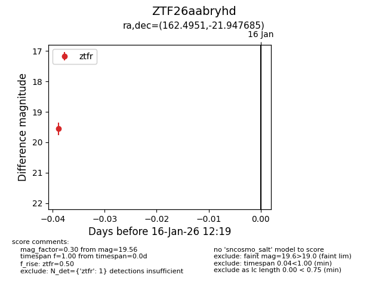
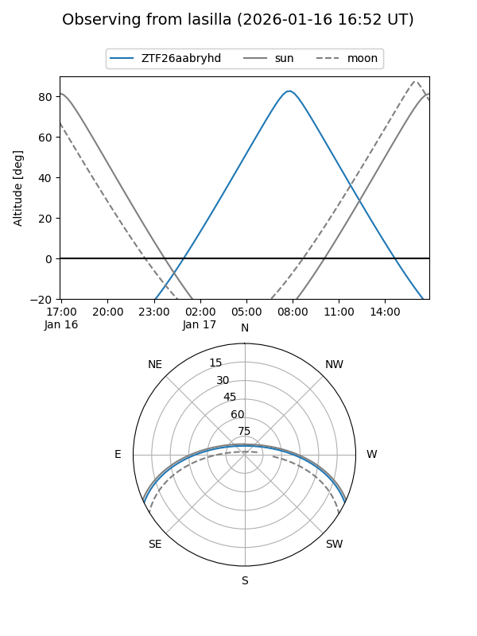
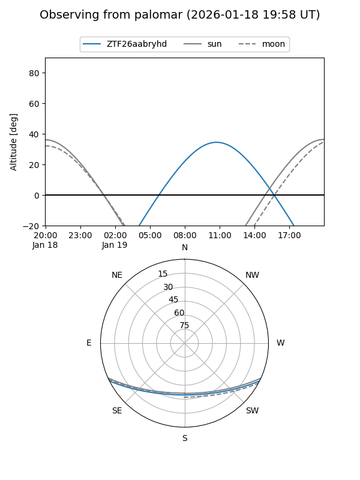

ZTF26aabryhd
Target ZTF26aabryhd at 2026-01-19 11:25
Aliases and brokers:
FINK: link
Lasair: link
ALeRCE: link
alt names
ZTF26aabryhd (ztf,fink_ztf)
Coordinates:
equatorial (ra, dec) = 162.4951,-21.94768
equatorial (HMS+DMS) = 10:49:58.82,-21:56:51.66
galactic (l, b) = (269.0252,+32.80793)
Flags:
Photometry:
last ztfr=19.67
2 ztfr detections
Lightcurve

Visibility


Additional plots